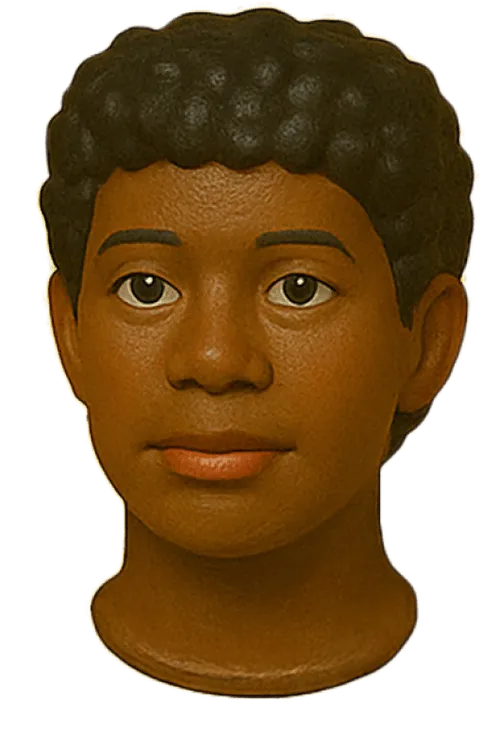
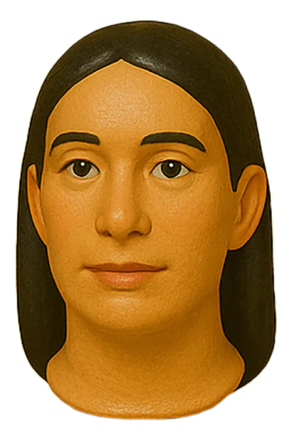
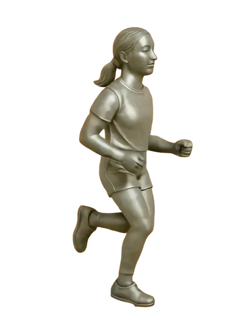
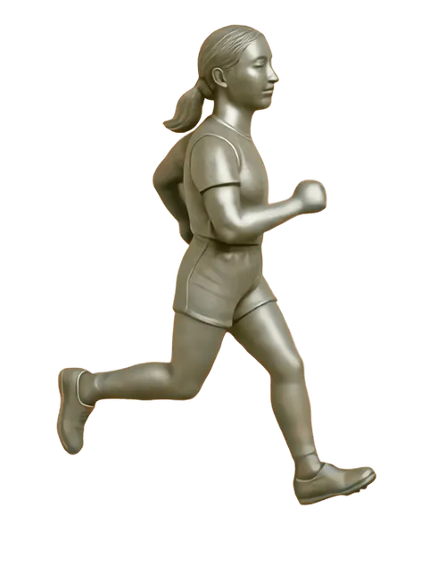

Create seamless transitions between two visual states smoothly, not instantly. It removes the visual chaos when layouts shift, making things feel smooth, considered, and intentional.
Scrolltrigger
Start animations when elements enter the viewport, scrub through timelines, pin elements in place, or snap to key points as users scroll.
Direct
Set Intention
Motion should feel like part of the idea, not an afterthought.
Direct
Build Trust
Deliberate motion tells people you know what you’re doing.
Direct
Guide attention
Motion can help users focus without needing to be told where.

Direct
Be Original
Templates help you get started, then build out your own ideas.
Direct
Be Thoughtful
Not everything needs to move.

Ideal for smooth marquees, auto playing sliders, and loops that just keep rolling.


Continue movement from a given speed, slow naturally to a stop. Perfect for adding physicality and flow to your interface.
Split Chars
Character Split Reveal
Split By Words
Word Split Reveal
Scramble
Scramble Text Reveal
Split Alpha
Alpha Reveal
From the Side
SIide Char Reveal
From the Side
Example Title
Animate each one independently. It’s all motion, no compromise: screen readers and search engines still see the original text.
SCROLLTRIGGER
MARQUEE
MARQUEE
SCROLLTRIGGER
Loop endlessly. Stack images, text, or both. Marquees give rhythm to your page without needing a single click